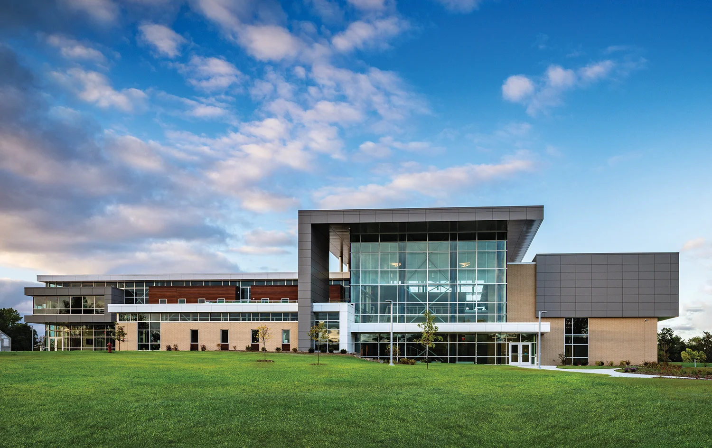

Family STEM Day

On April 18, 2026, we participated in Family STEM Day, an event hosted by the Einstein Project, Brown County Extension, and UW‑Green Bay STEM student organizations. Visitors explored a wide range of hands‑on STEM activities throughout the day.
The robotics area was organized by BCFR (Brown County FIRST Robotics) and featured several local teams, including Redbird Robotics (FRC 1716), Player One (FRC 9578), FrostByte (FTC 21737), and palinDRONE (FTC 24542).
Since this is our first year as a team and we don’t yet have a robot, we didn’t bring one to the event. Instead, we focused on helping however we could—supporting demonstrations, talking with visitors, and contributing to the experience alongside the other teams.